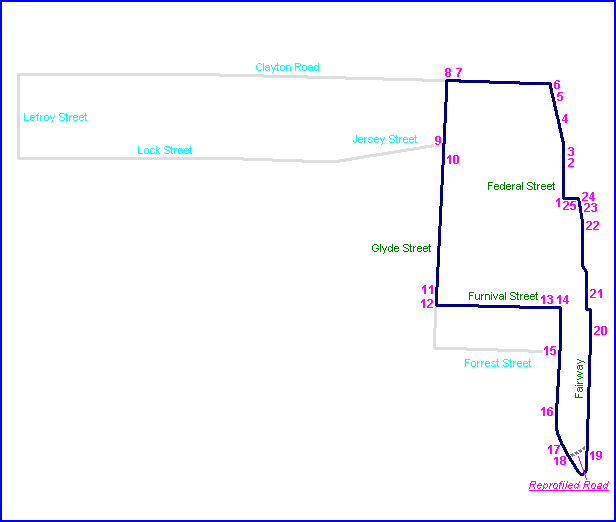
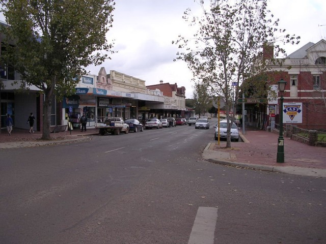
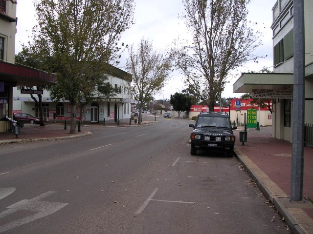
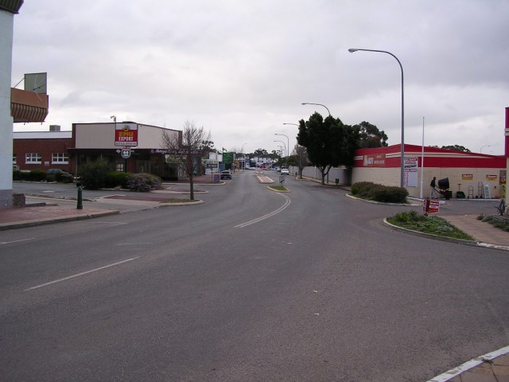
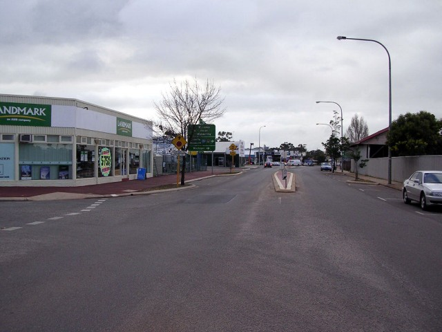
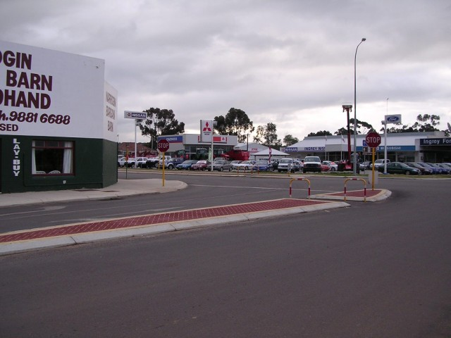
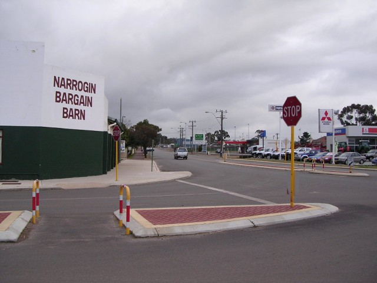
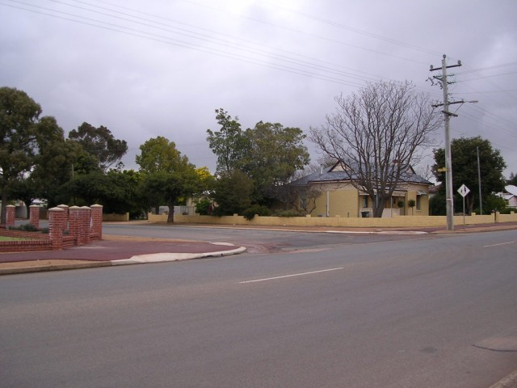
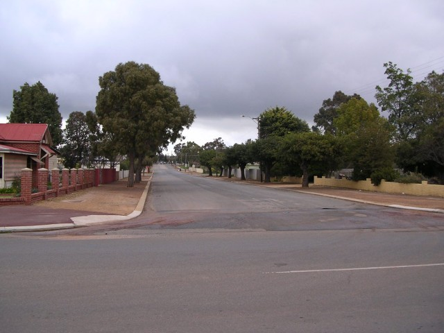

Narrogin (Flying 50 Variant) - Federal Street to Clayton Road
|| Contents || Federal / Clayton | Glyde / Furnival / Federal | Fairway || Home ||

Numbers on the map represent the location where the photographs were taken. Scroll
down to view the photographs.
Return to racingcircuits.net's Photo Archive Main Index

1 - The start area of the 'Great Flying 50' circuit on Ferderal
Street.

2 - Federal Street, approaching kink.

3 - Kink on Federal Street.

4 - Continuing along Federal Street.

5 - Left turn into Clayton Street.

6 - Clayton Street.

7 - Left turn into Glyde Street from Clayton Street.

8 - Glyde Street.
Photographs and Text ©Neil Fackerell. Reproduced here with kind permission.